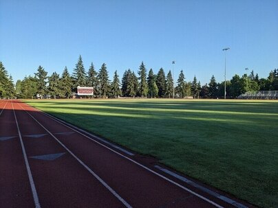
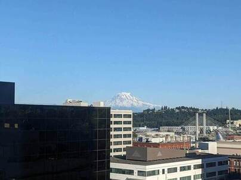
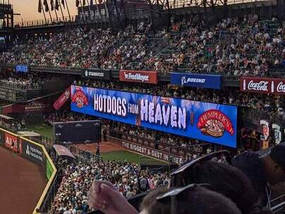

SciPy 2024
2024-08-20
Tacoma
Reasons you might have heard of it:
- Tacoma Narrows Bridge Collapse
- Toyota Tacoma
- 10 Things I Hate About You
- Sea-Tac Airport
- Mount Rainier
- Dale Chihuly

Photos






National Forest


Hurricane Ridge


Port Angeles


Waterfalls


Beaches


Forks


Hoh Rainforest


Poo Poo Point


Museum of Flight


Baseball




Tall Buildings


Museum of Glass


Pike Place Market